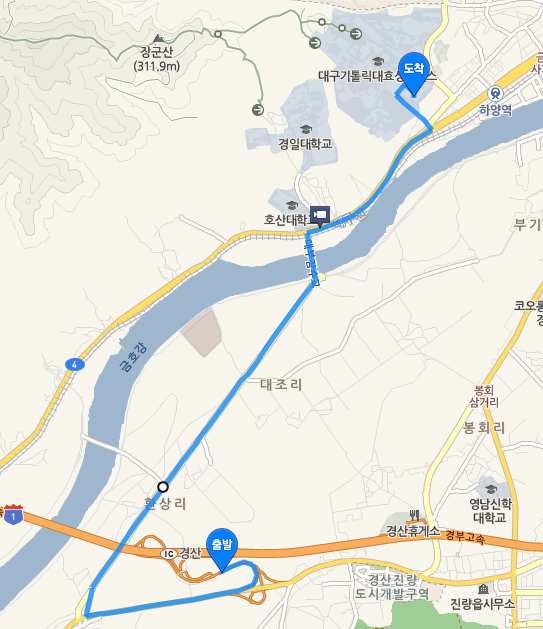
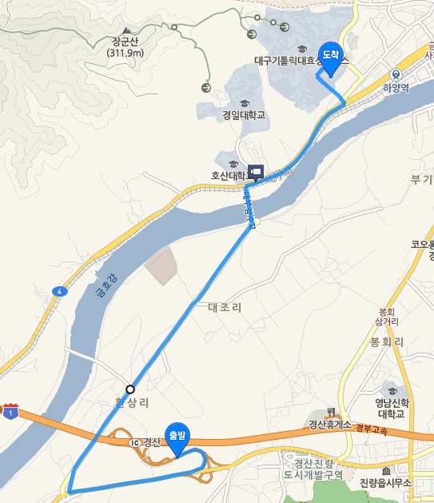

오시는 길
1. 대중 교통 이용
1) 1호선 안심역에서 하차 : 급행 5, 804, 55, 818, 814, 518-1 버스 이용
2) 2호선 사월역, 영남대역에서 하차 : 809, 840, 803 버스 이용
경부고속도로 경산 IC 하차
3. 기차 이용
하양역 하차 -> 대구가톨릭대학교 정문, 동문 이용
1) 1호선 안심역에서 하차 : 급행 5, 804, 55, 818, 814, 518-1 버스 이용
2) 2호선 사월역, 영남대역에서 하차 : 809, 840, 803 버스 이용
경부고속도로 경산 IC 하차
하양역 하차 -> 대구가톨릭대학교 정문, 동문 이용